Time-interleaved SAR ADC generator¶
This section describes how to generate a time-interleaved SAR ADC schematic and layout using BAG and laygo.
Overview¶
Time Interleaved Successive Approximation ADC (TISARADC) is a popular way of implementing a moderate precision (4-10 bits) ADC that operates at higher sampling rates than single SAR ADCs can achieve. As an example of demonstrating the automated analog and mixed signal circuits generation flow, the entire TISARADC generator is explained here.
Installation¶
Set up a BAG/laygo working directory for the your technology. For example, cds_ff_mpt environment can be set up by running the following commands.
$ git clone git@github.com:ucb-art/BAG2_cds_ff_mpt.git $ cd BAG2_cds_ff_mpt $ git submodule init $ git submodule update $ git submodule foreach git pull origin master
Note: for BWRC users, comprehensive working environments are provided under proper NDAs for certain technologies. Use the following repos and skip step 2, 3, 5, 6.
- tsmc16FFC:
git@bwrcrepo.eecs.berkeley.edu:jdhan/TISARADC_TSMC16FFC.git - tsmc28hpm:
- tsmc16FFC:
Copy configuration files and design libraries from laygo/generators/adc_sar/yaml by typing:
cp laygo/generators/adc_sar/yaml/adc_sar_spec.yaml . cp laygo/generators/adc_sar/yaml/adc_sar_size.yaml . cp -r laygo/generators/adc_sar/BagModules/adc_sar_templates BagModules/ cp -r laygo/generators/adc_sar/adc_sar_templates . cp -r laygo/generators/adc_sar/adc_sar_testbenches .
Note: some repos may already have those files in their working directories.
Add library definitions to your cds.lib
In cds.lib
DEFINE adc_sar_templates ./adc_sar_templates DEFINE adc_sar_testbenches ./adc_sar_testbenches
Open bag_lib.defs and remove the definition of adc_sar_templates if exist
In bag_lib.defs
adc_sar_templates BagModules #remove this
Run virtuoso and type the following command in CIW.
load "start_bag.il"
Open adc_sar_templates/capdac and update the library name of C0 and CDAC0 to **(technology_name)_micretemplates_dense**, as shown below.

Launch bag and run the following import script.
run laygo/generators/adc_sar/adc_sar_import.py
In the IPython interpreter, type the following command to construct the template and grid database. (Make sure proper techlib is attached to the microtemplate library)
run laygo/labs/lab2_a_gridlayoutgenerator_constructtemplate.py
Run the following command to generate the logic gate template library. The library name will be (technology_name)_logic_templates.
run laygo/generators/logic/logic_templates_layout_generator.py
Setting up parameters¶
ADC schematic and layout are constructed based on spec/size parameters defined in 2 configuration files in YAML format (adc_sar_spec.yaml, adc_sar_size.yaml).
Following parameters are defined in the configuration files:
- adc_sar_spec.yaml
- temp: nominal temperature
- temp_min: minimum temperature
- temp_max: maximum temperature
- v_in: nominal input swing (single ended)
- v_in_max: maximum input swing
- v_in_cm: nominal inpuut common mode
- n_bit: number of output bits
- n_bit_cal: number of output bits after digital calibration
- fsamp: effective sampling rate
- n_interleave: interleaving ratio
- c_unit: minimum unit capacitance of CDAC
- c_ground: grounded parasitic capacitance of c_unit
- c_delta: maximum capacitance mismatch of c_unit (normalized by c_unit)
- n_bit_samp_noise: standard deviation of sampling noise (in bits)
- n_bit_samp_settle: maximum sampler settling error in bits
- n_bit_comp_noise: standard deviation of comparator noise in bits
- rdx_array: CDAC radix array
- rdx_enob: Target ENOB after calibration
- cycle_comp: Comparator timing budget in cycle
- cycle_logic: Logic timing budget in cycle
- cycle_dac: DAC timing budget in cycle
- vdd: nominal supply voltage
- vdd_min: minimum supply voltage
- vdd_max: maximum supply voltage
- adc_sar_size.yaml
- capdac_c_m: multiplier of CDAC unit capacitor
- capdac_num_bits_vertical: CDAC number of bits in vertical direction
- capdac_num_bits_horizontal: CDAC number of bits in horizontal direction
- capdrv_m_list: cap driver multiplier list
- capdrv_space_offset: cap driver spacing parameter, for routing
- salatch_m: strongArm latch sizing
- salatch_m_buf: strongArm latch output buffer sizing
- salatch_m_rgnn: strongArm latch regenerative latch sizing
- salatch_m_rst: strongArm latch reset device sizing
- sarclkgen_m: strongArm latch clock generator sizing
- sarclkgen_fo: strongArm latch clock generator fanout
- sarclkgen_ndelay: strongArm latch clock generator # of delays
- sarret_m: strongArm latch output retimer sizing
- sarret_fo: strongArm latch output retimer fanout
- sarfsm_m: SAR FSM sizing
- sarlogic_m: SAR logic sizing
- dcap2_m:
- num_space_samp:
- num_space_sar:
For the starting point, following preset files are provided. They are not 100% finalized, but will serve well for initializations.
- **adc_sar_spec(size)_craft.yaml** : 9.6GS/s, 9bit ADC with digital calibration.
- **adc_sar_spec(size)_11b.yaml** : GS/s, 11bit ADC with digital calibration.
- **adc_sar_spec(size)_6b.yaml** : 2GS/s, 6bit ADC with radix-2 constellation.
TISARADC architecture¶
TISARADC is composed of 4 parts in the top level: ADC core, clock generator, output retimer and biasing.
- The ADC core performs the actual conversion operation. It is composed of multi-phased sampling frontend and N subADC that converts the actual ADC operation at (sampling_rate/N), where N is the interleaving ratio.
- The clock generator receives the high frequency clock at sampling rate, generates multi-phased clock for the interleaved ADC operation.
- The output retimer receives the output from the ADC core, aligns multi-phased signals to a single clock to be received by the following digital backend.
SubADC frontend layout generation¶
The frontend of subADCs is composed of three parts: capdac (CDAC), strongArm comparator (salatch), cap driver (capdrv). In the proposed flow, the ‘very’ frontend sampling switches are not the part of subADC frontend because they are designed separately, but obviously this is not the only way of partition.
The first block to be generated is CDAC, since this generator assumes the horizontal dimension is limited by CDAC size in x-direction. In order to generate CDAC layout, type:
run laygo/generators/adc_sar/adc_sar_capdac_layout_generator.py
This command will create a CDAC layout in adc_sar_generated/capdac, as shown below.

- The capdac generator reads n_bit and rdx_array parameters from adc_sar_spec.yaml, and capdac_c_m, capdac_num_bits_vertical, capdac_num_bits_horizontal parameters from adc_sar_size.yaml (or use default settings in the python code if load_from_file is set to false), users can update those parameters and regenerate the capdac. It will create a new CDAC with different shapes, as shown below.

If you want to generate the schematic as well, type:
run laygo/generators/adc_sar/adc_sar_capdac_schematic_generator.py
The figure shown below is one example of generated schematic. Note that CDAC capacitors (I0-I7) are arrayed, with radix parameters specified by rdx_array.

The schematic generation is not required for full-ADC generations, since you can generate the whole ADC schematic by running a top-cell generation script (unlike the layout counterpart, which requires running several scripts in series to generate the entire ADC). The CDAC schematic generation is used for cell level verifications though, such as LVS or transfer curve extraction. For LVS, type:
run laygo/generators/adc_sar/adc_sar_capdac_lvs.py
It will give a lvs passed message if the design is LVS clean.
Note: BAG2_cds_ff_mpt / FreePDK45 does not support LVS & extraction at this moment. Skip these steps for those processes
For parasitic extraction, type the following command.
run laygo/generators/adc_sar/adc_sar_capdac_extract.py
Note: this step could take a long time, depending on your extraction setup. Skip this if you just want to quickly go through steps.
You can run simulations on CDAC via BAG framework. The following command will launch the transfer curve simulation with schematic netlists. For the post-extract simulation, set extracted = True in the script.
run laygo/generators/adc_sar/adc_sar_capdac_verify.py
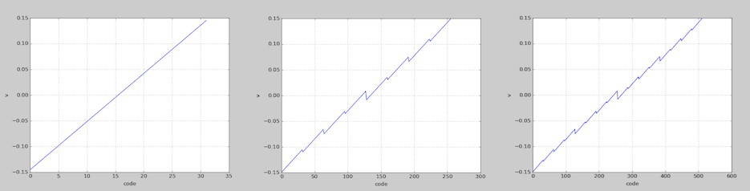
Simulation results from various settings (left: 5b-radix2, center: 8b-sub2radix, right: 10b-sub2radix)
After CDAC generation, strongArm latch layout can be generated by running:
run laygo/generators/adc_sar/adc_sar_salatch_pmos_layout_generator.py

- Here are additional scripts regarding the strongArm latch:
- adc_sar_salatch_pmos_schematic_generator.py: schematic generation
- adc_sar_salatch_pmos_schematic_lvs.py: LVS
- adc_sar_salatch_pmos_schematic_extract.py: RC extraction
- adc_sar_salatch_pmos_verify.py: verifications (clk-q, noise)
- Here are additional scripts regarding the strongArm latch:
The next step is generating capacitor drivers that drive CDAC. Run the following scripts:
run laygo/generators/adc_sar/adc_sar_capdrv_nsw_layout_generator.py run laygo/generators/adc_sar/adc_sar_capdrv_nsw_array_layout_generator.py
This is a 2-step generation; in the first script, individual driver cells are generated. The second script places driver cells (with the sizing parameters defined by capdrv_m_list in adc_sar_size.yaml.
Here’s one example layout of the capdrv.
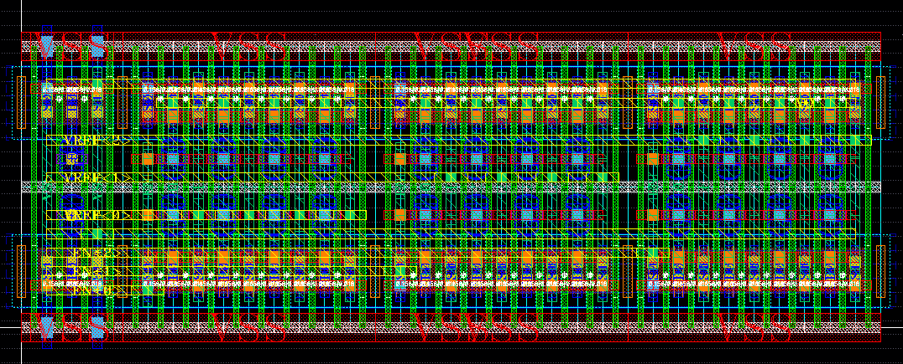
Here’s the capdrv_array layout (primitive cells are hidden).

Now it’s time to generate the frontend top layout/schematic. Type:
run laygo/generators/adc_sar/adc_sar_sarafe_nsw_layout_generator.py run laygo/generators/adc_sar/adc_sar_sarafe_nsw_schematic_generator.py run laygo/generators/adc_sar/adc_sar_sarafe_nsw_lvs.py
The commands will create a layout (and schematic) of sarafe_nsw, which is the frontend top of subADC, and run LVS. Try different presets introduced before and see if designs are generated properly.

SubADC backend layout generation¶
The backend of subADCs is composed of FSM(sarfsm), SAR logic(sarlogic), clock generator(sarclkgen), and retimer(sarret).
Run following scripts to generate those building blocks.
#FSM layout run laygo/generators/adc_sar/adc_sar_sarfsm_layout_generator.py #SAR logic run laygo/generators/adc_sar/adc_sar_sarlogic_wret_layout_generator.py run laygo/generators/adc_sar/adc_sar_sarlogic_wret_array_layout_generator.py #SAR clock generator run laygo/generators/adc_sar/adc_sar_sarclkdelay_layout_generator.py run laygo/generators/adc_sar/adc_sar_sarclkgen_core_static2_layout_generator.py run laygo/generators/adc_sar/adc_sar_sarclkgen_static_layout_generator.py #SAR retimer run laygo/generators/adc_sar/adc_sar_sarret_wckbuf_layout_generator.py #spacing elements for routing/filling run laygo/generators/adc_sar/adc_sar_space_layout_generator.py #SAR backend generation run laygo/generators/adc_sar/adc_sar_sarabe_dualdelay_layout_generator.py
SAR FSM
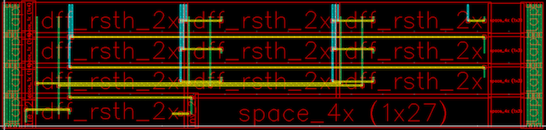
SAR logic
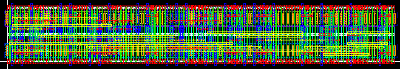
SAR logic array
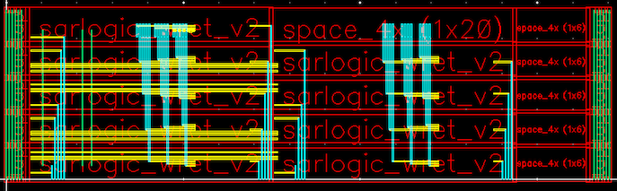
SAR clock delayline
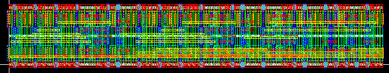
SAR clock generator
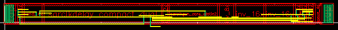
SAR retimer
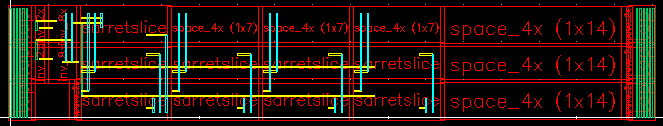
SAR backend top
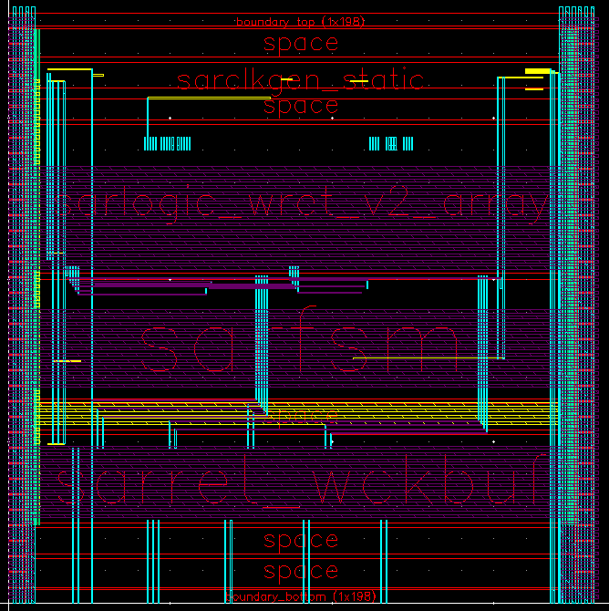
For schematic generation, run scripts. Again, BAG is generating schematics in hierarachical order, so you don’t need to run these scripts if you want to generate in top level.
#FSM layout run laygo/generators/adc_sar/adc_sar_sarfsm_schematic_generator.py #SAR logic run laygo/generators/adc_sar/adc_sar_sarlogic_wret_array_schematic_generator.py #SAR clock generator run laygo/generators/adc_sar/adc_sar_sarclkgen_static_schematic_generator.py #SAR retimer run laygo/generators/adc_sar/adc_sar_sarret_wckbuf_schematic_generator.py #spacing elements for routing/filling run laygo/generators/adc_sar/adc_sar_space_schematic_generator.py #SAR backend generation run laygo/generators/adc_sar/adc_sar_sarabe_dualdelay_schematic_generator.py
The frontend and backend can be integrated by running following scripts.
# layout run laygo/generators/adc_sar/adc_sar_sar_layout_generator.py # schematic run laygo/generators/adc_sar/adc_sar_sar_schematic_generator.py
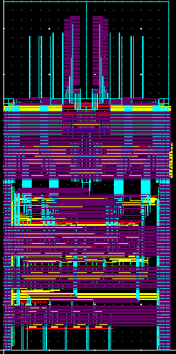
SubADC switch generation¶
The sampling frontend can be generated either from laygo or AnalogBase. While the sampler generated from AnalogBase (written by Eric Chang) is more flexible, associated APIs need to be set up (which is not for the cds_ff_mpt technology), so laygo based sampler is used for this example.
Run the following script to generate the sampling switches.
# layout
run laygo/generators/adc_sar/adc_sar_sarsamp_layout_generator.py
# schematic
run laygo/generators/adc_sar/adc_sar_sarsamp_schematic_generator.py
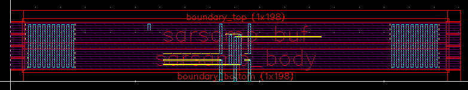
If the AnalogBase is set up for your technology, these scripts will generate the sampling switches.
# layout
run laygo/generators/adc_sar/sampler_nmos_layout_generator.py
# schematic
run laygo/generators/adc_sar/sampler_nmos_schematic_generator.py
SubADC top generation¶
If all subblocks are generated sucessfully, the SubADC top (sar_wsamp) can be easily generated by placing and routing subcells. Run the following scripts to generate the SubADC top.
# layout
run laygo/generators/adc_sar/adc_sar_sar_wsamp_layout_generator.py
# schematic
run laygo/generators/adc_sar/adc_sar_sar_wsamp_schematic_generator.py
The generated layouts shown below are from the full-stack subADC generation with different settings (9b, 6b, 10bits and different sizing parameters).
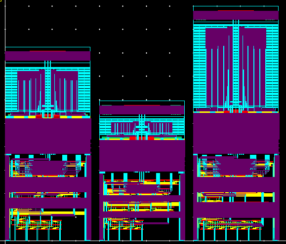
Array generation¶
The SAR array can be easily made from running the following scripts.
# layout
run laygo/generators/adc_sar/adc_sar_sar_wsamp_array_layout_generator.py
# schematic
run laygo/generators/adc_sar/adc_sar_sar_wsamp_array_schematic_generator.py
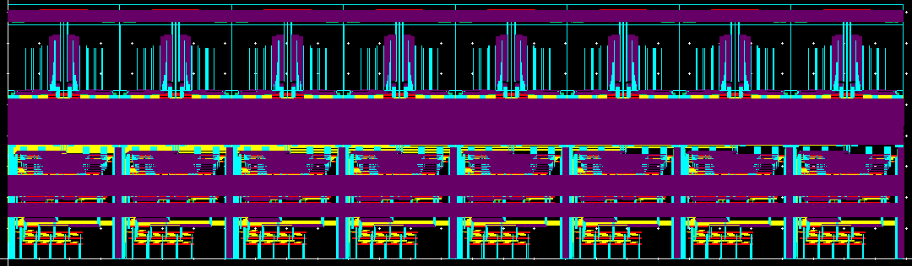
Clocking path generation¶
Zhongkai Wang made schematic and layout generators for the clock generation. Running following scripts will generate the clocking frontend. (You don’t need this for non-interleaving ADCs)
Retimer¶
From now on, AnalogBase has to be set up for layout generations (which is not for the cds_ff_mpt technology).
Bias¶
Top¶
Full stack generation¶
in laygo/generators/adc_sar, there are various levels of full-stack generators (generating all up to the specified hierarchy). Their filenames end with fullstack_generator.py
Contributors¶
The generator codes are written by Jaeduk Han, Eric Chang, Zhongkai Wang, Woorham Bae, and Pengpeng Lu. This document is written by Jaeduk Han.